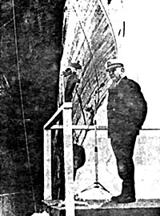

FOREWORD
by Costas Daphnis
|

Lafayette Ron Hubbard ('El Ron' to his flock), founder of the 'Church of Scientology' and self-styled 'Doctor', 'Professor', 'War Hero' and 'Commodore', mounts a rostrum at the bows of his flagship "Apollo", addressing his congregation and Corfiot disciples. The Commodore was last reported to be in the Caribbean, 'laughing off' a 4-year prison sentence awarded (in absentia) by a Paris Criminal Court for fraud, in 1978.
|
In "The Commodore and the Colonels", John Forte describes a certain episode of Corfu life during the dictatorship of Greece's Colonels.
The narrative is perhaps more of a true authentic documentary than an actual story, as such; but, either way, it cannot possibly be dismissed as a myth if only for the reason that, as a journalist on the spot and as a correspondent of international news agencies, I covered the whole drama and can thus bear witness to its authenticity.
By freely disbursing his cash-flow around Corfu, Hubbard generated a favourable climate in which to promulgate plans for the establishment of his 'Church of Scientology' under the guise of a public benefactor offering to carry out a mammoth economic reconstruction and development programme for the island which would include a University of (Hubbard's) Philosophy.
Despite the serious reservations regarding this benevolence expressed by the local authorities, all of whom (with one notable exception) were opposed to the presence of Hubbard's 'Church', scientology continued to thrive on the island with the blessing of the Colonels who were mesmerized by the unexpected funds injected into a tottering economy.
It was thanks largely to the international press, strongly opposed to Hubbard's activities in Corfu and reporting certain incidents perpetrated against British and U.S. nationals, which eventually jolted Patakos the Minister of the Interior, into ordering the sudden and immediate departure of Hubbard and his fleet from Corfu.
As a regular army officer John Forte served in Europe, Africa, The Far East, The Middle East, The Near East and eventually with the British Military Mission to Greece during the Greek Civil War. After a spell in NATO as a Grade 1 Staff Officer he retired from the army and returned to Greece as British Vice-Consul Corfu, a post he held from 1958-1971.
It was in the latter capacity that he was actively involved in this drama. John Forte was later appointed a Member of the British Empire and an Honorary Life Governor of the Commonwealth & Continental Church Society. The "Commodore and the Colonels" is an interesting, revealing and entertaining book, but above all it provides an edifying and valuable testimony which makes a positive contribution to the exposure of Hubbard's 'Church' and placing scientology in a true and proper perspective concerning which the general public in any country must surely have a right to know.


Last updated 11 January 1997
by Chris Owen (co@nvg.unit.no)